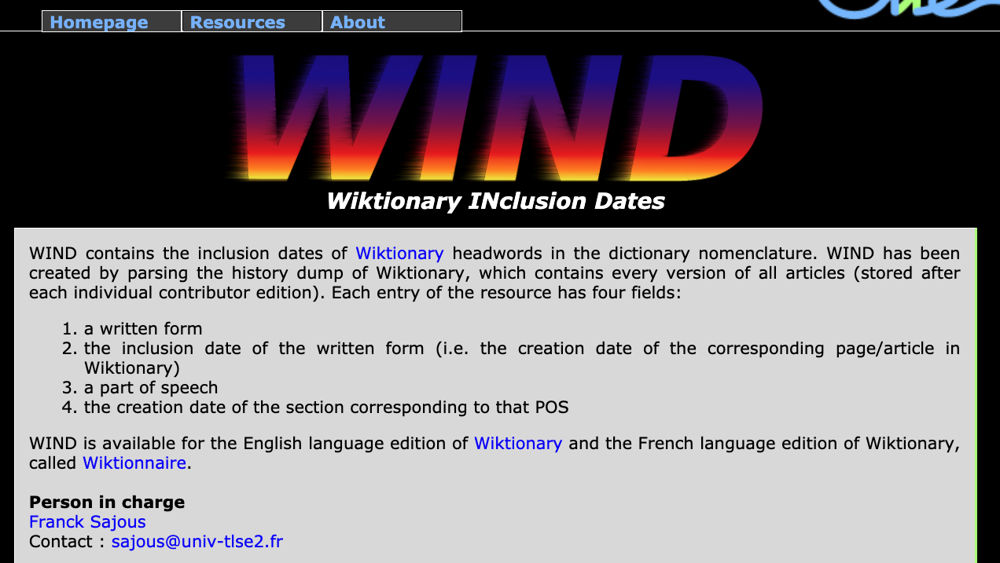

5 — Using dictionaries and analysing data
Lexicology and Lexicography
Introduction
Recap
- Revisited why lexicology treats the lexicon as a structured network, not a flat list, using mental lexicon evidence and embedding demos.
- Distinguished dictionary functions (descriptive vs prescriptive), sense-ordering strategies, and usage labels that mediate interpretation.
- Practised translating OED search output into research questions on word classes, formation processes, and semantic domains.
- Walked through OED workflows: extracting post-2000 neologisms, exporting CSV data, and analysing them with tables and pivot charts.
Outline
- Map the landscape of dictionary types (general, bilingual, specialised, diachronic vs synchronic).
- Evaluate crowdsourced vs curated platforms (Urban Dictionary, Wiktionary, OED) and their affordances.
- Explore machine-readable resources (WIND) and spreadsheet workflows for lexicological analysis.
- Run a hands-on comparison of dictionary entries to surface researchable contrasts.
- Connect dictionary outputs to linguistic research applications (historical, comparative, contemporary, methodological).
Types of Dictionaries
General Purpose Dictionaries
- Provide comprehensive linguistic information about words in a single language
- Spelling, pronunciation, and grammatical classification
- Multiple meanings and contextual usage examples
- Etymology and historical development notes
- Typically monolingual and organised alphabetically for easy reference
- Valuable for morphological research because they:
- Document detailed word origins and development
- Show common usage patterns and variations
- Provide historical context for word formation
Bilingual and Multilingual Dictionaries
- Facilitate translation between two or more languages
- Key features and functions:
- Support language learning and translation work
- Help decode meanings across different languages
- Illustrate cultural and linguistic nuances
- Important for morphological research by:
- Enabling cross-linguistic word formation studies
- Revealing patterns in comparative linguistics
- Showing how concepts transfer between languages
Specialized Dictionaries
- Focus on specific aspects of language or technical fields:
- Etymology and word origins
- Precise pronunciation guides
- Technical and discipline-specific terminology
- Slang and colloquial expressions
- Particularly valuable for:
- Detailed academic research in specific fields
- Understanding technical vocabulary development
- Tracing specialised word formation patterns
Diachronic and Synchronic Dictionaries
- Diachronic dictionaries:
- Track how words change through history
- Document evolution of meanings and forms
- Synchronic dictionaries:
- Focus on language at specific points in time
- Present contemporary usage and meanings
- Document current word formation patterns
- Essential tools for:
- Historical linguistic research
- Understanding language evolution
- Tracking word formation changes over time
Learner’s Dictionaries
- Specifically designed for language acquisition:
- Clear, simplified definitions
- Practical, everyday usage examples
- Word frequency information
- Common collocations and phrases
- Additional features often include:
- Grammar notes and usage guidelines
- Cultural context explanations
- Learning exercises and examples
- Useful for research into:
- Common word usage patterns
- Language acquisition processes
- Basic word formation principles
Specific Examples of Dictionaries
Oxford English Dictionary (OED)
- Official website: https://www.oed.com/
- Comprehensive historical dictionary of English by Oxford University Press
- Considered the authoritative source on English language
- Key features:
- Historical approach: traces word development chronologically
- Extensive quotations: over 3 million citations from wide-ranging sources
- Comprehensive coverage: 600,000+ words and phrases across 20 volumes
- Online since 2000; third edition in progress (electronic-only)
- Value for research:
- Traces detailed development of word forms and meanings
- Provides extensive historical context and usage patterns
- Enables in-depth morphological analysis
- Documents linguistic patterns and changes over time
Wiktionary
- Official website: https://www.wiktionary.org/
- Multilingual, web-based collaborative dictionary
- Key features:
- Crowdsourced content with rapid updates
- Comprehensive and flexible entries for new words
- Multiple language support with cross-references
- Detailed etymological information where available
- Research applications:
- Neologism and language evolution studies
- Cross-linguistic research opportunities
- Contemporary usage patterns
- Educational tool for language learning and research
WIND (Machine-readable Wiktionary)
Sajous, Calderone, and Hathout (2020)
http://redac.univ-tlse2.fr/lexiques/wind.html


Urban Dictionary
- Official website: https://www.urbandictionary.com/
- Crowdsourced dictionary focusing on slang and colloquial language
- Key features:
- User-generated content reflecting varied interpretations
- Dynamic tracking of language evolution
- Rich cultural context and references
- Multiple definitions showing usage variations
- Research value:
- Sociolinguistic studies of contemporary language
- Tracking emergence and spread of new slang
- Cultural analysis through language use
- Understanding informal word formation processes
Other Major Dictionaries
Merriam-Webster Dictionary (https://www.merriam-webster.com/)
- American English focus
- Strong etymology coverage
- Regular updates for contemporary usage
- Valuable for understanding American English word formation
Collins English Dictionary (https://dictionary.cambridge.org/)
- Comprehensive vocabulary coverage
- Strong British English focus
- Detailed word formation information
- Includes frequency information and usage trends
Cambridge English Dictionary (https://dictionary.cambridge.org/)
- Clear definitions and examples
- Strong learner focus
- British English emphasis
- Excellent grammatical information and usage notes
Online Etymology Dictionary (https://www.etymonline.com/)
- Detailed word history tracking
- Etymology focus
- Historical development emphasis
- Traces morphological changes over time
Applications in Linguistic Research
Historical linguistic analysis
- Tracking morphological changes through time
- e.g. comparing Old English strong verbs to Modern English irregular forms
- Understanding semantic development
- e.g. charting the shift of awful from ‘full of awe’ to ‘terrible’
- Documenting word formation patterns
- e.g. analyzing the emergence of the prefix cyber- in late 20th century
Comparative linguistics
- Cross-linguistic word formation studies
- e.g. comparing German and English compound nouns (e.g. de. Zahnarzt vs en. tooth doctor)
- Analysis of borrowing patterns
- e.g. tracing French loanwords (e.g. cuisine, ballet) into English after the Norman Conquest
- Understanding morphological universals
- e.g. investigating prefixation productivity across unrelated languages (e.g. ge- in German, en- in English)
Contemporary language research
- Neologism studies and word creation
- e.g. investigating the rise of selfie and meme via social media corpora
- Sociolinguistic variation
- e.g. examining morphological variation in teenage text messaging (e.g. abbreviations like u for you)
- Internet-influenced language change
- e.g. analyzing adoption of acronyms (e.g. lol, brb) in spoken and written registers
Methodological applications
- Diachronic studies of word formation
- e.g. comparing selfie definitions in 2013 vs 2025 corpora to trace shifts from novelty to mainstream usage
- Quantitative analysis of lexical change over time
- e.g. measuring the rise of cryptocurrency entries over time
- Corpus-based validation of dictionary entries
- e.g. using the Corpus of Contemporary American English to test whether dictionary data match corpus data
- Tracking the adoption of loanwords and neologisms
- e.g. tracing how hygge transitions from Danish loanword to standard entry in learner dictionaries
- Identifying gaps or biases in dictionary coverage
- e.g. noticing that everyday items like takeaway are absent from learner dictionaries
- Supporting computational linguistics and NLP tasks (e.g. lemmatisation, part-of-speech tagging)
- e.g. expanding sentiment lexicons with blended forms like hangry
- Informing the design of new dictionaries and lexical resources
- e.g. designing a climate change glossary after analysing coverage gaps for items like carbon offsetting
Practice: analysing and comparing dictionary entries
- Choose at least two terms that might be interesting for comparison.
- Look them up in \(\geq\) 2 dictionaries from \(\geq\) 2 different dictionary types.
- Analyse and compare the entries between the dictionaries.
- Can you think of related research questions?
- Prepare slides in this PowerPoint file.
- Present your findings to the class.
Practise using the OED
Analysis objectives
- How many terms are marked as obsolete across the whole OED?
- What are the most common word classes of obsolete terms?
- What are the most common word-formation processes?
- What are the most common subjects?
Using the OED’s Advanced Search
- find all terms that are marked as obsolete
- sort them by
Date (newest first) - export the results as a CSV file
Using Microsoft Excel
- open the CSV file
- save the file as an Excel file (
.xlsxextension) - convert the exported rows/columns to a
Table - create
Pivot Tables to analyse the data - create
Pivot Charts to visualise the data
Summary
- Dictionaries are not monolithic. Different types — general, specialised, bilingual, diachronic—serve different purposes.
- Choose the right tool for the job. The best dictionary for your research depends on your specific questions (e.g., historical development, contemporary slang, cross-linguistic comparison).
- Dictionaries are data. They are curated datasets that can be used for qualitative and quantitative linguistic analysis, revealing patterns in word formation, semantic change, and language use.
References
Sajous, Franck, Basilio Calderone, and Nabil Hathout. 2020. “ENGLAWI: From Human- to Machine-Readable Wiktionary.” In Proceedings of the 12th Language Resources and Evaluation Conference, 3016–26. Marseille, France: European Language Resources Association. https://www.aclweb.org/anthology/2020.lrec-1.369.